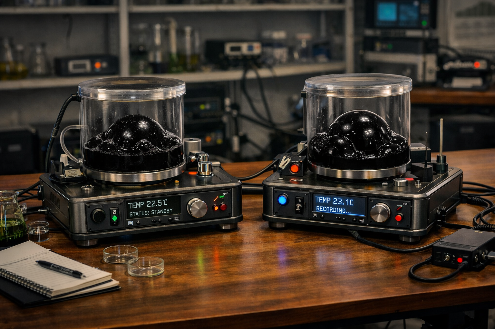

Часть первая: «Чужая логика»
Пока повреждённый трофейный корабль пришельцев дрейфовал возле стены астероидов под охраной
группы флота Легарда, вокруг
него уже начиналась совсем другая битва — не за выживание, а за право первым прикоснуться к
чужим технологиям.
Несколько буксиров удерживали объект в стабильном положении, компенсируя последствия боя и
случайные столкновения с
мелкими обломками. Вокруг находились корабли охранения. Любая попытка приблизиться к трофею без
специального разрешения
лично Легарда была запрещена.
Спустя несколько часов после завершения операции по галосвязи было созвано экстренное совещание.
В виртуальном зале присутствовали лидеры трёх систем, несколько ведущих учёных, представители
военного командования и
аналитических служб. Людей было немного. Настолько немного, насколько вообще позволяла важность
вопроса.
Первым заговорил Сержен.
— Предлагаю сразу определить порядок дальнейших действий. Насколько я помню Кодекс Альянса,
любые обнаруженные
технологии неизвестного происхождения подлежат совместному изучению представителями всех
систем.
— Всё верно, - Легард спокойно кивнул.
— Тогда возникает вполне закономерный вопрос, — продолжил Сержен. — Где именно будет происходить
это изучение?
Владек по-прежнему больше слушал, чем говорил.
— Вопрос действительно важный, — спокойно заметил он.
Легард слегка подался вперёд.
— Важный. И ответ на него достаточно простой.
— Даже так? - Сержен прищурился.
— Именно так. Объект был захвачен, достаточно неожиданно, флотом системы Элайа. Этот контакт
произошёл на территории
ответственности моей системы. Операция по захвату также проводилась под моим командованием.
- Ну это факт...
— И сам объект будет доставлен на территорию системы Элайа и размещён на одном из наших закрытых
исследовательских
комплексов.
— Удобное решение, - Сержен недовольно откинулся в кресле.
— Это логичное и справедливое решение, не перечащее правилам Кодекса, — поправил его Легард. — Я
беру на себя
обеспечение безопасности объекта, его транспортировку, охрану и организацию работ. Представители
всех трёх систем
получат полный доступ к исследованиям согласно Кодексу Альянса.
— Полный доступ? — уточнил Владек.
— Полный.
— Ко всем результатам?
— Ко всем.
— Ко всем образцам?
— Ко всем.
— Тогда я не вижу нарушений Кодекса, - Владек задумчиво кивнул.
Сержен несколько секунд молчал, явно перебирая возможные возражения.
Но их становилось всё меньше.
— Хорошо, — наконец произнёс он. — При одном условии.
— Слушаю.
— В исследовательскую группу войдут специалисты всех трёх систем. На равных правах.
— Именно это я и предлагаю.
Владек впервые за всё совещание позволил себе лёгкую улыбку.
— Тогда считаю вопрос решённым.
После короткого голосования решение было принято единогласно.
Захваченный корабль предстояло доставить на секретный объект системы Элайа.
Местоположение комплекса не разглашалось даже большинству высокопоставленых чинов самой системы,
о его существовании знали лишь единицы.
Туда же в ближайшие дни должны были прибыть лучшие инженеры, физики, материаловеды, аналитики и
специалисты по
неизвестным технологиям из всех трёх звёздных систем.
Настоящая работа только начиналась.
*****
Подготовка и буксировка "объекта" заняла несколько суток.
Всё это время повреждённый корабль находился под круглосуточной охраной. Его сопровождали
военные суда Элайи, а
информация о маршруте передавалась только по закрытым каналам связи. Даже большинству экипажей
кораблей сопровождения не
сообщили конечную точку назначения.
Когда громадный ангар на одной из удалённых лун системы Элайа наконец принял трофей
, наружные
створки закрылись на долгие недели.
Начинался новый этап.
В просторном аналитическом зале стояли пару десятков человек в защитных костюмах.
Инженеры.
Физики.
Материаловеды.
Специалисты по энергетическим системам.
Военные эксперты.
Лучшие представители трёх звёздных систем.
Во главе группы находился доктор Эммид Баун.
Он стоял перед большим проекционным изображением захваченного корабля и внимательно смотрел на
присутствующих.
— Коллеги, — спокойно начал он, — напомню очевидную, но очень важную вещь. Мы не знаем, что
именно находится внутри
объекта. Не знаем принципов его работы. Не знаем, какие системы продолжают функционировать. Не
знаем, есть ли внутри
опасные вещества, источники излучения или автоматические механизмы защиты, -
На экране рядом с проекцией корабля появились строки инструкций безопасности,
— Поэтому никаких самостоятельных действий. Никаких попыток что-либо вскрывать или отключать без
согласования с группой
анализа. Любое обнаруженное устройство сначала фиксируется, документируется и только потом
изучается, -
Баун сделал короткую паузу,
— Сегодня наша задача не разобрать корабль. Сегодня наша задача — научиться его видеть.
Несколько человек понимающе кивнули.
Переходной шлюз медленно состыковался с одним из сохранившихся технических люков объекта.
Внутри царила тишина.
Настолько глубокая, что казалось, будто сам корабль давно мёртв.
Герметичные створки разошлись в стороны.
Первая исследовательская группа вошла внутрь.
Шаги глухо отдавались по каменно-металлическому покрытию пола.
Впереди двигались специалисты по безопасности и автоматические разведывательные дроиды. За ними
шли учёные.
Коридор оказался относительно широким.
Слишком широким для технического прохода.
И слишком узким для грузового.
Словно создатели корабля закладывали совсем другие стандарты передвижения.
Стены состояли из неизвестного тёмно-серого материала.
Ни сварных швов.
Ни креплений.
Ни привычных панелей обслуживания.
Казалось, будто бОльшая часть внутренней конструкции была выращена или сформирована как единое
целое.
— Интересно... — пробормотал один из инженеров.
— Что именно? — спросил Баун.
— Всё выглядит технологично. Но я не вижу ни одного знакомого инженерного решения.
— Потому что вы ищете знакомую логику. - Баун медленно провёл взглядом по стенам.
Учёный вопросительно посмотрел на него,
— Мы привыкли считать, что развитая технология должна прийти к решениям похожим на наши. Но это
лишь предположение, -
Он сделал несколько шагов вперёд,
— Перед нами цивилизация, которая изучала ту же физику. Те же законы природы. Те же
математические зависимости. Но
пришла к ним другим путём.
Некоторое время никто не отвечал.
Все были заняты собственными наблюдениями.
Следующие часы превратились в непрерывную фиксацию данных.
Сканеры строили трёхмерные карты внутренних помещений.
Автоматические зонды исследовали состав материалов.
Специалисты отмечали расположение каждого крупного узла и каждого неизвестного устройства.
Постепенно накапливались первые наблюдения.
И вместе с ними появлялись первые вопросы.
Где экипаж?
Был ли он вообще?
Если корабль пилотировался живыми существами, то где жилые помещения?
Где командный центр?
Где системы жизнеобеспечения?
Пока что ни одна из групп не могла дать уверенного ответа.
Некоторые помещения вообще не имели очевидного назначения.
То, что один специалист принимал за энергетический узел, другой считал вычислительным
комплексом.
То, что выглядело как элемент навигации, могло оказаться частью двигательной системы.
Чем больше данных собиралось, тем сильнее росло странное ощущение.
Корабль был логичным,
очень логичным,
но логика эта была чужой.
Словно кто-то решал те же задачи, что и инженеры Альянса, но каждый раз выбирал иной путь.
В конце первого дня исследований Баун собрал руководителей групп в импровизированном штабе прямо
внутри ангара.
На проекционных экранах вращалась трёхмерная модель корабля, постепенно заполнявшаяся
результатами сканирования.
Учёный некоторое время молча рассматривал изображение.
Затем произнёс:
— Коллеги, могу поздравить нас с первым выводом.
Несколько человек подняли головы.
— Каким?
— Мы официально можем признать, что пока ничего не понимаем, - Баун позволил себе едва заметную
улыбку.
По помещению прокатились смешки.
Но никто не стал спорить,
потому что это была чистая правда.
*
Следующие дни постепенно слились для исследовательской группы в один длинный рабочий цикл.
Сутки сменяли сутки.
Накапливались результаты анализов,
пополнялись базы данных,
строились схемы внутренних систем корабля
и вместе с тем росло количество вопросов.
Если в первый день учёные осторожно предполагали, что основные принципы работы объекта станут
понятны после детального
изучения, то к концу первой недели подобный оптимизм практически исчез.
Корабль упорно не желал раскрывать свои тайны.
Одна из групп занималась энергетическими системами.
По всем признакам внутри корабля существовал единый контур распределения энергии.
Однако привычных генераторов обнаружить не удавалось.
Несколько крупных узлов явно участвовали в энергоснабжении объекта, но принцип их работы
оставался непонятным.
Более того, некоторые элементы одновременно напоминали и источник энергии, и вычислительный
блок.
Подобное противоречило привычным инженерным решениям Альянса.
На одном из совещаний инженер системы Корса раздражённо бросил на стол планшет.
— Такое ощущение, будто они специально смешали все функции в одну систему.
— Или наоборот разделили их иначе, чем мы привыкли, — спокойно заметил Баун.
— Какая разница?
— Огромная, -
Он вывел на экран несколько схем,
— Мы постоянно пытаемся определить назначение устройства по его внешнему виду. А что если у них
такой подход никогда не
существовал?
В комнате воцарилась тишина.
— Поясните.
— Допустим, мы считаем, что это энергетический узел, -
На экране появилась схема,
— Но для них энергия могла быть не отдельной задачей, а частью вычислений, -
Следом появилась ещё одна схема,
— Или наоборот. Вычисления могли быть частью энергетического процесса.
Несколько человек переглянулись.
Звучало странно.
Но всё увиденное на корабле уже давно перестало быть привычным.
Не меньшие проблемы возникли с предполагаемой системой управления.
Корабль был довольно большим,
однако привычного командного центра обнаружить так и не удалось.
Не было ни мостика,
ни центра управления,
ни помещений для операторов,
ни даже намёка на место, откуда можно было бы контролировать все системы.
Сначала появилась теория о полностью автоматическом управлении,
однако вскоре от неё пришлось отказаться.
Слишком многие процессы выглядели адаптивными,
слишком много решений принималось в реальном времени.
Подобная гибкость больше напоминала действия разумного оператора
или чего-то очень близкого к разумному.
— Возможно экипаж находился в другом месте корабля, — предположил один из аналитиков.
— Мы уже исследовали семьдесят процентов внутренних помещений, — ответил Баун. — Пока нет ни
одного признака присутствия
живых существ.
— Каюты?
— Нет.
— Места отдыха?
— Нет.
— Пищевые системы?
— Нет.
— Медицинские блоки?
— Нет.
Один из специалистов задумчиво произнёс:
— Тогда либо экипажа не было вовсе...
— Либо он был совершенно не похож на нас, — закончил Баун.
Через несколько дней появилась новая теория.
Возможно корабль являлся не полноценным боевым судном, а лишь частью более крупной системы.
Эта версия быстро набрала сторонников,
ведь слишком многие узлы выглядели незавершёнными.
Слишком многое указывало на постоянный обмен информацией с внешним источником,
будто корабль привык работать не самостоятельно
а в составе чего-то большего.
Эта мысль заставила многих вспомнить события возле стены астероидов.
Разведчик.
Затем флот.
Затем сражение.
Возможно всё увиденное действительно было лишь частью огромного механизма экспансии.
Но самым неприятным открытием стала другая вещь.
Чем лучше исследователи понимали отдельные элементы конструкции, тем меньше они понимали корабль
в целом.
Каждый новый ответ рождал несколько новых вопросов.
Материалы были знакомы с точки зрения физики.
Энергия подчинялась известным законам.
Излучения укладывались в существующие модели.
Математика оставалась математикой.
Но всё это было собрано совершенно иначе.
Однажды вечером, рассматривая очередную трёхмерную схему объекта, Баун неожиданно произнёс:
— Теперь я понимаю, что меня беспокоило всё это время.
— Что именно? - Несколько человек подняли головы.
Учёный некоторое время молчал.
Затем медленно ответил:
— Мы постоянно говорим о чужих технологиях, -
Он указал на модель корабля,
— Но это не совсем правильно.
— Почему?
— Потому что технологии у нас одинаковые, -
В комнате стало тихо,
— Законы физики одинаковые.
Законы математики одинаковые.
Законы пространства одинаковые, -
Он сделал паузу,
— Разница не в технологиях.
Разница в том, как они научились использовать эти законы.
Некоторое время никто ничего не говорил,
потому что впервые за всё время исследований кто-то смог сформулировать проблему максимально
точно.
Перед ними находилась не чужая техника,
перед ними находилась чужая школа науки.
И именно это делало её настолько трудной для понимания.
*
Впрочем, к концу четвёртой недели исследований произошло событие, которое заставило сразу
несколько групп изменить свои
планы.
Началось всё с обычной сверки результатов внутреннего сканирования.
Один из аналитиков Лиары долго изучал объёмную модель корабля, периодически накладывая друг на
друга результаты
различных сканеров.
Затем нахмурился,
потом пересчитал данные ещё раз
и только после этого вызвал Бауна.
Через несколько минут возле проекционного стола уже собрались руководители основных групп.
На экране вращалась трёхмерная модель корабля.
— Что вы обнаружили? — спросил Баун.
— Вот этот сектор, - аналитик увеличил один из внутренних отсеков.
На схеме загорелась область глубоко внутри корпуса.
С первого взгляда ничего необычного в ней не было,
но затем специалист вывел дополнительные данные.
Несколько слоёв бронирования,
дополнительная защита,
дублирующие контуры питания,
автономные линии связи
и всё это вокруг одного единственного внутреннего объёма.
В помещении повисла тишина.
— Это похоже на центральный вычислительный блок? — предположил кто-то.
— Нет.
— Энергетический узел?
— Тоже нет,
Аналитик покачал головой,
— Мы проверили все известные варианты.
Баун внимательно смотрел на данные.
Его взгляд постепенно становился всё более сосредоточенным.
— Размер помещения?
— Примерно сотня кубических метров.
Несколько человек удивлённо переглянулись.
Для столь защищённого объекта объём был относительно небольшим.
— Может это система управления? — предположил инженер из Корсы.
— Тогда почему она не находится ближе к остальным ключевым узлам? — возразил другой
специалист.
— Может оружие?
— Слишком хорошо защищено.
— Может источник энергии?
— Слишком маленький.
Версии начали появляться одна за другой,
но ни одна не выглядела убедительной.
Баун некоторое время молчал.
Затем произнёс:
— Что ещё показывает сканирование?
— Есть ещё одна странность, - Аналитик переключил изображение.
На экране появились десятки тонких линий.
Они тянулись к загадочному отсеку практически со всех частей корабля.
Из двигательных систем.
Из навигационных блоков.
Из вычислительных узлов.
Из энергетических контуров.
Казалось, что весь корабль в той или иной степени связан именно с этим местом.
Словно различные системы не управляли этим отсеком
а наоборот,
зависели от него.
В комнате стало заметно тише.
Баун медленно приблизился к проекции.
Несколько секунд он рассматривал схему.
После чего негромко сказал:
— Очень интересно...
— Есть предположения? — спросил кто-то.
Учёный отрицательно покачал головой.
— Пока нет, -
Он ещё раз посмотрел на защищённый сектор,
— Но что бы там ни находилось, его создатели считали это достаточно важным, чтобы защищать лучше
всего остального
корабля.
Никто спорить не стал,
это было очевидно.
Баун выключил часть проекций и повернулся к присутствующим.
— Подготовьте отдельную группу.
— Для чего?
— Будем вскрывать этот отсек.
— Когда?
Учёный ещё раз посмотрел на схему загадочного сектора.
— Завтра.
Часть вторая: «Субстанция»
На следующий день работы были прекращены практически во всех второстепенных секторах корабля.
Все основные силы исследовательской группы сосредоточились вокруг обнаруженного отсека.
Несмотря на сравнительно небольшие размеры, именно он оказался наиболее защищённым местом всего
объекта.
Дополнительная броня,
автономное питание,
дублирующие системы контроля,
несколько независимых контуров, назначение которых до сих пор оставалось неизвестным.
Словно создатели корабля заранее предполагали, что однажды всё остальное может выйти из строя.
Но не это.
Вскрытие заняло почти семь часов.
Никто не собирался рисковать.
Сначала дистанционные сканеры,
потом микрозонды,
потом химический анализ атмосферы внутри отсека.
Лишь убедившись в отсутствии очевидной опасности, группа приступила к открытию внутренней
переборки.
Когда тяжёлая створка наконец сдвинулась с места, все присутствующие невольно подались
вперёд.
Внутри оказалось помещение почти правильной цилиндрической формы.
Пустое.
На первый взгляд.
Никаких терминалов,
механизмов,
никаких систем управления.
Лишь в центре находилась крупная вертикальная конструкция высотой около трёх метров.
Полупрозрачная,
герметичная,
подключённая десятками коммуникаций ко всем направлениям корабля.
Некоторое время никто ничего не говорил.
Затем один из инженеров нарушил тишину.
— Это что... резервуар?
— Похоже на то, — ответил Баун.
— Для топлива?
— Не знаю.
— Для охлаждения?
— Не знаю.
— Для хранения чего-то?
— Вот это уже больше похоже на правду, - Баун усмехнулся.
После продолжительного и кропотливого "отсоединения" техническими специалистами этого сооружения
от "комуникаций" стало
возможно рассмотреть конструкцию. Это было подобие почти прозрачной колбы.
Внутри находилась тёмная масса.
Густая,
почти чёрная,
слабо поблёскивающая в лучах исследовательских прожекторов.
Она напоминала одновременно жидкость, гель и какую-то неизвестную форму вещества и даже слизь.
Никаких движений внутри не наблюдалось,
но и полностью неподвижной масса не выглядела.
Создавалось странное ощущение, будто она медленно меняет форму.
Настолько медленно, что глаз едва мог это заметить.
— Записывайте всё, — негромко произнёс Баун.
— Уже записываем.
— Всё равно записывайте.
Некоторое время учёные молча рассматривали находку.
Чем дольше они наблюдали за конструкцией, тем больше вопросов возникало.
Если резервуар действительно являлся настолько важным элементом корабля, то любое неосторожное
действие могло повредить
не только содержимое, но и возможность дальнейшего изучения.
— Вскрывать здесь естественно не будем, — наконец произнёс Баун.
Несколько человек облегчённо кивнули.
— Согласен, — поддержал инженер из Корсы. — Мы понятия не имеем, что находится внутри.
— Более того, — добавил другой специалист, — мы даже не уверены, что резервуар сейчас полностью
отключён от остальных
систем корабля.
Баун ещё раз посмотрел на десятки коммуникационных линий, подходящих к конструкции.
— Именно поэтому будем демонтировать целиком.
Сам процесс извлечения занял почти двое суток.
Резервуар оказался намного тяжелее, чем предполагалось по его размерам.
Первоначально для демонтажа подготовили стандартные грузовые манипуляторы исследовательского
комплекса.
Однако уже во время первых попыток стало ясно, что расчёты ошибочны.
Конструкция практически не поддавалась перемещению.
Пришлось привлекать тяжёлые инженерные платформы.
— Не понимаю... — пробормотал один из операторов, сверяясь с показаниями датчиков. — При таком
объёме она не должна
столько весить.
— Значит должна, — сухо ответил Баун, поправив на носу очки.
Ещё никто не предполагал, насколько важным окажется это наблюдение.
После извлечения резервуар был перемещён в отдельный исследовательский спецсектор комплекса.
Подготовленное помещение находилось глубоко внутри объекта.
Автономное питание,
независимая система вентиляции,
собственная герметизация,
три резервных шлюза
и возможность полного аварийного отсечения сектора от остального комплекса.
Некоторые считали такие меры чрезмерными.
Большинство — необходимыми.
Следующие несколько дней ушли на обсуждения.
На первый взгляд ничего не происходило,
но именно тогда принимались самые важные решения.
Учёные спорили,
строили предположения,
составляли сценарии возможных последствий.
Что находится внутри?
Топливо?
Источник энергии?
Биологическая форма жизни?
Компонент системы управления?
Неизвестный материал?
Каждая версия находила сторонников
и каждая разбивалась о нехватку данных.
Наконец комиссия приняла решение получить минимальный образец.
Настолько малый, насколько позволяла техника.
Для этой операции был создан отдельный автоматический комплекс,
ни один человек не находился непосредственно рядом с резервуаром,
все наблюдали за процессом из защищённого пункта управления.
Когда тонкий манипулятор впервые коснулся внешней оболочки, в помещении повисла тишина.
Сработают ли защитные механизмы?
Начнётся ли реакция?
Повредится ли содержимое?
Ничего не произошло,
операция продолжилась.
Спустя несколько часов автоматике удалось извлечь первую небольшую порцию вещества.
Всего несколько десятков миллилитров
но этого было достаточно.
В прозрачном исследовательском контейнере медленно осела густая чёрная масса.
Почти неподвижная,
почти безжизненная
и абсолютно непонятная.
Первые анализы начались немедленно
и почти сразу принесли разочарование.
Химический состав определить не удалось.
Спектральный анализ не дал внятных результатов.
Попытки выделить молекулярную структуру заканчивались противоречивыми данными.
Несколько приборов вообще выдавали взаимоисключающие результаты,
словно вещество не нарушало законы физики
но и не спешило вписываться в привычные модели.
— Такое ощущение, будто мы пытаемся описать океан линейкой, — устало произнёс один из
материаловедов.
Баун ничего не ответил,
он смотрел на чёрную массу внутри контейнера.
С каждым часом она нравилась ему всё меньше
и одновременно интересовала всё больше.
Пока что удалось установить лишь несколько фактов.
Вещество сохраняло стабильность,
не вступало в химические реакции,
не выделяло опасного излучения,
не разрушалось под воздействием температуры
и обладало аномально большой плотностью.
Очень немного данных.
Но именно с них начиналось понимание любой новой науки.
*
Первые недели исследований принесли гораздо больше
вопросов, чем ответов.
Сначала учёные действовали по привычной схеме:
Температура,
давление,
магнитные поля,
радиация,
электрические воздействия,
Механические нагрузки.
Ничего.
Слизь словно безразлично относилась ко всему происходящему.
— Может это вообще не рабочее вещество? — однажды предположил один из физиков. — Может это
просто побочный продукт
какого-то процесса.
— Побочный продукт не размещают в самом защищённом отсеке корабля, — ответил доктор Баун.
— Тогда топливо.
— Топливо должно расходоваться.
— А откуда мы знаем, что оно не расходуется?
— Потому что во время боя корабль совершал манёвры, использовал системы связи, исчезал и
появлялся. Однако объём
вещества в резервуаре практически не изменился, - Баун посмотрел на экран.
В помещении стало тихо.
Этот факт нравился далеко не всем,
потому что противоречил большинству рабочих гипотез.
Затем появилась теория энергетического накопителя.
Её тоже быстро пришлось отбросить.
Несмотря на огромную плотность вещества, никаких признаков хранения энергии обнаружить не
удалось.
Даже самые чувствительные приборы не фиксировали накопленных зарядов.
— Такое ощущение, что мы ищем фонарик внутри камня, — раздражённо произнёс специалист по
энергетике.
— А если это и не фонарик вовсе? — спокойно ответил профессор Пол Семенс из Корсы.
Настоящий интерес появился после серии экспериментов с электромагнитными полями.
Неожиданно выяснилось, что слизь практически не реагирует на большинство воздействий.
Кроме одного.
Сложных модулированных сигналов.
Когда исследователи начали подавать на образцы различные последовательности импульсов, приборы
впервые зафиксировали
отклик.
Очень слабый,
почти незаметный
но воспроизводимый.
После этого лаборатория ожила.
Появились новые теории,
расчёты,
новые эксперименты.
Учёные начали подозревать, что вещество каким-то образом связано с обработкой информации.
Именно тогда вспомнили данные с захваченного корабля.
О загадочных управляющих узлах.
О навигационных системах.
О множестве каналов, сходящихся к резервуару.
Через несколько дней доктор Баун собрал очередное совещание.
На экране висела схема корабля пришельцев.
— Допустим, — начал он, — это не топливо, -
Никто не возражал,
— Допустим, это не источник энергии, -
Снова тишина,
— Тогда почему почти все ключевые системы корабля были связаны именно с этой колбой, с этим
резервуаром?
Кто-то пожал плечами, кто-то хмыкнул скептически а профессор Пол Семенс жестом руки показал "Ну
и..."
— Потому что он участвовал в управлении?
— Возможно.
— В навигации?
— Возможно.
— В связи?
— Возможно.
Доктор Баун некоторое время молча смотрел на результаты последних экспериментов.
— Есть одна странность, которую мы заметили, но почему-то не восприняли всерьёз, -
В лаборатории стихли разговоры,
— Эта субстанция не реагирует практически ни на что. Ни на температуру, ни на давление, ни на
излучение, ни на
физическое воздействие, -
Он вывел на экран последние графики,
— Но каждый раз она подаёт признаки активности, когда получает упорядоченные последовательности
сигналов.
— Информацию? — уточнил кто-то.
— Именно. Если говорить грубо — ЦИФРЫ, -
Баун задумчиво посмотрел на чёрную массу в контейнере,
— Такое ощущение, будто всё остальное её совершенно не интересует. ТОЛЬКО ЦИФРЫ, -
Несколько секунд в лаборатории стояла тишина,
— И мне начинает казаться, коллеги, что мы ищем в ней ВЕЩЕСТВО... тогда как она может оказаться
ПРОЦЕССОМ.
Часть третья: «Как так ?...»
Следующие несколько суток лаборатория жила только одной задачей.
Если доктор Эмид Баун оказался прав, значит вещество действительно реагировало на информацию.
Оставалось понять — на какую именно.
Учёные начали буквально "разговаривать" со "слизью" единственным понятным ей языком.
В контейнер последовательно подавались математические последовательности, простые и сложные
алгоритмы, геометрические
построения, логические схемы, двоичные коды, случайные наборы чисел. Затем подключили к решению
задач "С.КО.М.", который
за считанные минуты сформировал тысячи вариантов информационных последовательностей, способных,
по мнению специалистов,
вызвать закономерную реакцию.
"Слизь" действительно отвечала
но совершенно бессистемно.
Иногда отклик возникал на простейшую последовательность,
иногда полностью игнорировал сложнейшие вычисления.
Никакой закономерности найти не удавалось.
Очередное совещание закончилось почти полным разочарованием.
— Может, мы ошиблись ещё в самом начале? — устало произнёс один из математиков.
— Нет... ошиблись не в выводах, - Баун отрицательно покачал головой.
Он медленно посмотрел на чёрную массу за защитным стеклом,
— Мы снова совершаем одну и ту же ошибку, -
Все подняли головы,
— Мы пытаемся заставить её делать то, что придумали мы... вместо того чтобы понять, для чего её
создали "ОНИ".
В лаборатории повисла тишина.
Именно в этот момент молодой инженер из группы навигационных систем нерешительно поднял
руку.
— Доктор... можно одну мысль?
— Конечно.
— Мы всё время подаём математические данные... Но ведь на корабле эта субстанция, скорее всего,
работала не с
математикой вообще... а с навигацией, -
Несколько человек переглянулись.
Инженер продолжил уже увереннее,
— Что если попробовать не вычисления... а пространственные координаты?
Баун несколько секунд молча смотрел на него.
Затем резко повернулся к оператору.
— Подготовьте трёхмерную координатную сетку. Самую простую.
Эксперимент занял меньше минуты.
Когда в систему впервые передали лишь три числовых значения, соответствующих условной точке
пространства, приборы
мгновенно зафиксировали самый сильный отклик за всё время исследований.
В лаборатории стало необычайно тихо.
Баун не отрывал взгляда от графиков.
И впервые за всё время едва заметно улыбнулся.
— Кажется... коллеги.., -
Он медленно выдохнул,
— Мы наконец перестали задавать ей неправильные вопросы.
Новая серия экспериментов продолжалась почти непрерывно.
Менялись координаты,
Изменялись расстояния между условными точками,
добавлялись новые пространственные оси.
И каждый раз слизь реагировала,
не одинаково,
но закономерно.
Теперь сомнений уже не оставалось -
Она действительно "понимала" пространственные координаты.
Оставался главный вопрос -
Что именно она с ними делала?
— Предлагаю следующий шаг, — нарушил молчание инженер навигационной группы. — Если она
воспринимает координаты, значит
должна существовать какая-то цель этой информации.
— Какая? — спросил Баун.
— Проверим.
Через несколько часов в лаборатории появился новый стенд.
Два одинаковых цилиндрических контейнера,
в каждом — небольшой объём субстанции.
Рядом с каждым — одинаковый экспериментальный навигационный модуль, который инженеры успели
собрать специально для этих
исследований.
Никакой связи между установками не существовало,
именно это и требовалось доказать.
— Начинаем, — коротко сказал Баун.
В первый модуль ввели условные координаты в пространстве.
Приборы ожили,
слизь откликнулась.
Во второй колбе — ничего.
Эксперимент повторили,
поменяли координаты,
изменили последовательность -
снова ничего.
В лаборатории вновь повисло разочарование.
— Значит ошиблись... — тихо произнёс кто-то.
Баун долго смотрел на схему.
Потом неожиданно сказал:
— Нет.., -
Он подошёл к обоим навигационным блокам,
— Мы снова мыслим как люди, -
Все удивлённо посмотрели на него,
— Мы считаем, что эти две установки разные.
Он коснулся рукой первого корпуса затем
второго.
— А если для этой субстанции они должны быть... одним устройством?
Наступила тишина.
Инженер сразу понял мысль.
— Синхронизировать?
Баун медленно кивнул.
— Полностью.
Не обмениваться данными.
Не связываться сигналами.
А сделать так, чтобы оба блока считали себя одной системой координат.
Работа закипела вновь.
Через несколько часов инженеры закончили синхронизацию.
Наступил момент нового опыта.
Баун лично дал команду.
— Координаты... подать.
На этот раз произошло то, чего ещё никто не видел.
Чёрная масса в обеих колбах одновременно едва заметно дрогнула.
Не вспенилась,
не засветилась,
не изменила форму -
Она словно
...на мгновение потеряла чёткость своих границ.
Совсем ненадолго,
всего на долю секунды,
но этого оказалось достаточно.
Приборы одновременно зафиксировали невозможное.
Масса вещества в первом контейнере уменьшилась на несколько граммов.
Во втором — ровно на столько же увеличилась.
Никто не двигался.
Никто не произносил ни слова.
В лаборатории слышалось только тихое гудение приборов.
Один из операторов первым нарушил тишину.
— Это невозможно...
Баун продолжал смотреть на показания весов.
Не отрывая взгляда, он негромко произнёс:
— Нет.., -
Он медленно покачал головой,
— Невозможно — это когда нарушаются законы природы, -
Он поднял взгляд на коллег,
— А сейчас... мы просто столкнулись с законами, которых ещё не знаем.
Следующий эксперимент предложил сам доктор Эмид Баун.
— Если вещество действительно связано с пространством, значит оно должно воздействовать не
только на себя, -
Он положил на стол небольшой титановый цилиндр размером с карандаш,
— Поместим внутрь инертный маркер - кусок металла. Без электроники. Без источников питания.
Обычный кусок
металла.
— Зачем? — спросил коллега профессор Пол Семенс.
— Чтобы исключить любые побочные объяснения.
Маркер аккуратно погрузили в первую колбу со слизью.
Во второй находилось немного слизи.
Навигационные модули синхронизировали, после чего оператор ввёл новую последовательность
пространственных координат.
Все замерли.
Несколько секунд не происходило ничего.
Затем поверхность чёрной массы в обоих колбах едва заметно дрогнула,
будто по ней пробежала невидимая рябь.
И снова наступила тишина.
— Всё? — разочарованно произнёс кто-то.
Оператор уже собирался завершить опыт, когда прибор контроля массы неожиданно подал короткий
сигнал.
— Странно..,
Он быстро открыл данные,
— В первой колбе масса уменьшилась...
Второй оператор почти одновременно поднял голову.
— Во второй... увеличилась.
Никто ничего не понял.
Баун молча подошёл ко второй колбе.
Внутри неё всё так же находилась небольшая порция чёрной субстанции.
И...
Тот самый титановый цилиндр из первой колбы,
точно в том положении, в котором его несколько секунд назад погрузили в первую.
Несколько человек одновременно переглянулись.
Один из инженеров машинально посмотрел на камеры наблюдения,
запись сразу вывели на большой экран,
кадр за кадром.
Замедление,
максимальное увеличение.
Маркер не летел,
не растворялся,
не проходил сквозь стенки.
На одном кадре цилиндр находился в первой колбе, на следующем - уже во второй.
В лаборатории повисла тяжёлая тишина.
Баун долго смотрел на запись.
Затем негромко сказал:
— Коллеги... мне кажется, мы всё это время неправильно представляли сам процесс, -
Он подошёл к экрану с координатами,
— Мы думали, что эта субстанция переносит вещество, -
Он покачал головой,
— Нет.
Она меняет положение обьекта в пространстве.
Именно это, скорее всего, и является её настоящим истиным назначением.
В лаборатории ещё долго никто не произносил ни слова.
Каждый смотрел на запись последнего эксперимента, словно надеясь найти в ней ошибку,
но ошибки не было.
Металический маркер не перемещался,
не ускорялся,
не проходил сквозь материю.
Он просто... переставал находиться в одном месте и оказывался в другом.
Первым нарушил молчание Эмид Баун.
— Коллеги... мне кажется, сегодня мы впервые увидели не новую технологию.., -
Он сделал небольшую паузу,
— ...а новый взгляд на пространство.
Несколько человек подняли головы.
Баун медленно подошёл к прозрачной колбе.
Чёрная вязкая масса лежала внутри совершенно спокойно. Так, будто ничего необычного и не
произошло.
— Мы искали двигатель.
Искали топливо.
Искали источник энергии.
Но, скорее всего... ошибались с самого начала, -
Он осторожно коснулся ладонью защитного стекла,
— Эта субстанция ничего не двигает.
Она вообще не знает, что такое движение.
В лаборатории снова стало тихо.
— Помните старую теорию квантовой связности? А именно - "Две частицы, разделённые немыслимыми
расстояниями,
ведут себя так, словно
между ними нет пространства", -
Он обвёл взглядом присутствующих,
— Мы всегда считали это странным исключением из привычной картины мира. А что, если это вовсе не
исключение? Что, если
существуют процессы, для которых расстояние вообще не является физической величиной? -
Баун повернулся к экрану с координатами,
— Тогда становится понятным всё, -
Он указал на три числовые строки,
— Для нас это координаты.
Для неё , жидкости-слизи - это адрес.
Не путь,
не направление,
не расстояние - именно
"АДРЕС".
Он замолчал, давая всем осмыслить сказанное.
— Если наша гипотеза верна, то эта субстанция не переносит объект через пространство.
Она изменяет сам факт его нахождения в пространстве.
Один из молодых физиков медленно опустился в кресло.
— Получается... Внезапное исчезновение и появление кораблей пришельцев...
— ...никогда не было исчезновением, — закончил Баун. — Они не проходили путь между двумя
точками. Они просто переставали
находиться в одной и начинали находиться в другой!
Снова повисла тишина,
на этот раз совсем другая.
Не растерянная -
осмысленная.
Все понимали, что присутствуют при открытии, последствия которого невозможно даже
представить.
Баун ещё раз посмотрел на колбу.
— Мы пока не знаем, как это работает.
Не знаем, почему это работает.
И, возможно, ещё очень долго не узнаем.
Но одного у нас уже никто не отнимет.
Сегодня мы сделали первый шаг к пониманию технологии, которая на тысячи лет опережает нашу.
Он выключил проекцию.
Перед тем как покинуть лабораторию, произнёс последнюю фразу:
— Завтра мы перестанем изучать эту субстанцию...
Он посмотрел на коллег.
— Завтра мы начнём учиться думать так, как думали "её создатели"...
